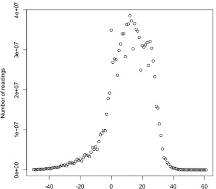
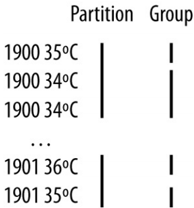
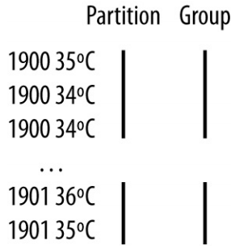

2.Sorting
排序数据的能力是MapReduce的核心。即使应用本身没考虑分类，也可以使用MapReduce提供的sorting阶段组织它的数据。
2.1、准备（Preparation）
如果要按照温度对天气数据集排序。把温度存储为Text对象不适用于排序的目的，因为有符号的整数不会按字典顺序排序（？？）。作为替换，将数据存储为顺序文件，它的IntWritable类型的键代表温度（并且正确地排序），它的Text类型的值是数据行。
例 9-3是一个只有map的job，它过滤输入以移除没有读取到有效温度的记录。每个map创建一个block压缩的顺序文件作为输出。执行命令如下：
% hadoop jar hadoop-examples.jar SortDataPreprocessor input/ncdc/all \
input/ncdc/all-seq
例 9-3. A MapReduce program for transforming the weather data into SequenceFile format
public class SortDataPreprocessor extends Configured implements Tool {
static class CleanerMapper
extends Mapper<LongWritable, Text, IntWritable, Text> {
private NcdcRecordParser parser = new NcdcRecordParser();
@Override
protected void map(LongWritable key, Text value, Context context)
throws IOException, InterruptedException {
parser.parse(value);
if (parser.isValidTemperature()) {
context.write(new IntWritable(parser.getAirTemperature()), value);
}
}
}
@Override
public int run(String[] args) throws Exception {
Job job = JobBuilder.parseInputAndOutput(this, getConf(), args);
if (job == null) {
return -1;
}
job.setMapperClass(CleanerMapper.class);
job.setOutputKeyClass(IntWritable.class);
job.setOutputValueClass(Text.class);
job.setNumReduceTasks(0);
job.setOutputFormatClass(SequenceFileOutputFormat.class);
SequenceFileOutputFormat.setCompressOutput(job, true);
SequenceFileOutputFormat.setOutputCompressorClass(job, GzipCodec.class);
SequenceFileOutputFormat.setOutputCompressionType(job,
CompressionType.BLOCK);
return job.waitForCompletion(true) ? 0 : 1;
}
public static void main(String[] args) throws Exception {
int exitCode = ToolRunner.run(new SortDataPreprocessor(), args);
System.exit(exitCode);
}
}
2.2、部分排序（Partial Sort）
默认情况下，MapReduce通过键对输入记录排序。例 9-4是使用IntWritable类型键进行顺序文件排序的变种。
例 9-4.A MapReduce program for sorting a SequenceFile with IntWritable keys using the default HashPartitioner
public class SortByTemperatureUsingHashPartitioner extends Configured
implements Tool {
@Override
public int run(String[] args) throws Exception {
Job job = JobBuilder.parseInputAndOutput(this, getConf(), args);
if (job == null) {
return -1;
}
job.setInputFormatClass(SequenceFileInputFormat.class);
job.setOutputKeyClass(IntWritable.class);
job.setOutputFormatClass(SequenceFileOutputFormat.class);
SequenceFileOutputFormat.setCompressOutput(job, true);
SequenceFileOutputFormat.setOutputCompressorClass(job, GzipCodec.class);
SequenceFileOutputFormat.setOutputCompressionType(job,
CompressionType.BLOCK);
return job.waitForCompletion(true) ? 0 : 1;
}
public static void main(String[] args) throws Exception {
int exitCode = ToolRunner.run(new SortByTemperatureUsingHashPartitioner(),
args);
System.exit(exitCode);
}
}
假如用30个reducers运行这个程序：
% hadoop jar hadoop-examples.jar SortByTemperatureUsingHashPartitioner \
-D mapreduce.job.reduces=30 input/ncdc/all-seq output-hashsort
这个命令产生30个输出文件，每个都是排过序的。可是，没有联合（例如，如果是普通文本数据，通过衔接concatenation）这些文件产生全局排序的文件的简单方法。对大多数应用，这是无关紧要的。例如，想要按照键进行查找时一组排过序的文件也是可以的。SortByTemperatureToMapFile和LookupRecordsByTemperature便是这样的。通过使用map文件代替顺序文件，（使用partitioner）有可能第一次就找到一个键所属的相关分区，然后在map文件分区内进行高效的记录查找。
2.2.1、控制排序顺序
排序顺序是由RawComparator控制的，MapReduce框架通过如下途径找到它：
- 如果设置了mapreduce.job.output.key.comparator.class类，明确地设置属性或者调用Job的setSortComparatorClass()方法，那么就使用这个指定类的实例。（在老的MapReduce API中，等价的设置方法是JobConf的setOutputKeyComparatorClass()方法）；
- 否则，键必须是WritableComparable的子类，并且为键类（key class）使用了注册的comparator；
- 如果没有注册comparator，那么使用RawComparator。RawComparator反序列化对象中进行比较的字节流并且委托WritableComparable的compareTo()方法进行比较。
这些规则加强了为自定义的Writable类注册优化的版本的RawComparators的重要性，并且可以看出通过设置自己的comparator可以直接改变排序顺序。
2.3、整体排序（Total Sort）
怎样使用Hadoop产生一个全局排序的文件呢？天真的想法是仅仅使用一个分区。但是这对于大文件来说是可想而知的低效，因为一台机器必须处理所有的输出，这就抛弃了MapReduce提供的并行框架带来的好处。
作为替代，如果生成一组排序的文件，通过衔接，这些文件能够构成一个整体排序的文件。这样作的秘诀是，使用支持输出整体排序的partitioner。例如，如果有四个分区，可以将低于-10°C的键放置在第一个分区，在-10°C至0°C之间的在第二个分区，0°C至10°C的在第三个分区，超过10°C的在第四个分区。
尽管这种方法有用，但是必须谨慎选择分区的大小以确保分区相当地均匀，以便job的时间不会被某个reducer拖累。要构建均匀的分区，需要了解数据在整个数据集的分布。写一个计算落在某个数据区间中的记录数量的MapReduce job是简单的。例如，图9-1展示了温度数据集中温度的分布图
图 9-1.Temperature distribution for the weather dataset

尽管可以利用温度分布信息构建一组非常均匀的分区，但是，事实上，对于需要对整个数据集运行一个job来构建均匀分区是不理想的。通过抽样键空间是可以获取一个相当地均匀的一组分区的。抽样这种想法的依据是：通过查看键的子集来逼近键的分布，然后这个子集构建分区。幸运的是，不用写代码来实现抽样，Hadoop带了一些取样器（samplers）。
InputSampler类定义了一个内部的的Sampler接口，它的getSample()方法参数为一个InputFormat和一个Job，返回结果是键样本：
public interface Sampler<K, V> {
K[] getSample(InputFormat<K, V> inf, Job job)
throws IOException, InterruptedException;
}
客户端通常不直接调用接口。作为替代，使用InputSampler的静态方法writePartitionFile()方法，它创建一个存储用于定义分区的键的顺序文件：
public static <K, V> void writePartitionFile(Job job, Sampler<K, V> sampler)
throws IOException, ClassNotFoundException, InterruptedException
TotalOrderPartitioner使用它产生的顺序文件为排序job创建分区。如例9-5:
例 9-5.A MapReduce program for sorting a SequenceFile with IntWritable keys using the TotalOrderPartitioner to globally sort the data
public class SortByTemperatureUsingTotalOrderPartitioner extends Configured
implements Tool {
@Override
public int run(String[] args) throws Exception {
Job job = JobBuilder.parseInputAndOutput(this, getConf(), args);
if (job == null) {
return -1;
}
job.setInputFormatClass(SequenceFileInputFormat.class);
job.setOutputKeyClass(IntWritable.class);
job.setOutputFormatClass(SequenceFileOutputFormat.class);
SequenceFileOutputFormat.setCompressOutput(job, true);
SequenceFileOutputFormat.setOutputCompressorClass(job, GzipCodec.class);
SequenceFileOutputFormat.setOutputCompressionType(job,
CompressionType.BLOCK);
job.setPartitionerClass(TotalOrderPartitioner.class);
InputSampler.Sampler<IntWritable, Text> sampler =
new InputSampler.RandomSampler<IntWritable, Text>(0.1, 10000, 10);
InputSampler.writePartitionFile(job, sampler);
// Add to DistributedCache
Configuration conf = job.getConfiguration();
String partitionFile = TotalOrderPartitioner.getPartitionFile(conf);
URI partitionUri = new URI(partitionFile);
job.addCacheFile(partitionUri);
return job.waitForCompletion(true) ? 0 : 1;
}
public static void main(String[] args) throws Exception {
int exitCode = ToolRunner.run(
new SortByTemperatureUsingTotalOrderPartitioner(), args);
System.exit(exitCode);
}
}
这里使用了RandomSampler，使用统一的可能性0.1选择键，抽取样本的最大数量为10,000，最大的分片数量为10（这些是InputSampler作为应用运行时的默认设置），一旦这些设置被满足，sampler就停止。samplers在客户端上运行，所以要限制下载的分片的数量以保证sampler快速运行。事实上，运行sampler的时间是整个job时间的一小部分。InputSampler把需要在集群中运行的tasks直接共享的分区文件加到分布式缓存中。运行中，sampler选择–5.6°C，13.9°C，和22.0°C作为分区边界（四个分区），这是比之前的分区方式更均匀的分区。
sampler的选择依输入数据而定。例如，SplitSampler，只抽样一个分片中的前n条记录，对于排序数据不太适用，因为它不根据分片的整体选择键。此外，IntervalSampler在分片中每隔一定距离选择键，是排序数据的一个较好选择。RandomSampler是一个好的通用的sampler。如果这些都不合适（要记住，抽样的目的是产生大小近似相等的分区）可以通过实现Sampler接口写一个自定义的sampler。
InputSampler和TotalOrderPartitioner的一个非常好的属性是可以任意选择分区数——即，reducers的数量。但是，只有在分区边界不同时TotalOrderPartitioner才能工作。如果键空间很小而分区数很大，可能会有分区边界冲突的问题。
运行这个程序的命令：
% hadoop jar hadoop-examples.jar SortByTemperatureUsingTotalOrderPartitioner \
-D mapreduce.job.reduces=30 input/ncdc/all-seq output-totalsort
这个命令产生30个分区，每个都是内部排序过的；此外，对于这些分区，分区i中的所有键都比分区i+1中的键小。
2.4、次要排序（Secondary Sort）
MapReduce框架在输入到达reducers之前对输入记录进行排序。但是，对于特定的键，值是未排序的。一次运行和下次运行中值出现的顺序甚至都不稳定，因为它们来自不同的map tasks，自始至终可能结束的时间不同。通常来说，大多数MapReduce程序的编写都不应该依赖reduce函数输入的值的顺序。但是，通过一种特别的方式对键进行排序和分组可以给值强加一个顺序。
要阐述这个想法，考虑计算每年最大温度的MapReduce程序。如果以降序排序每年的值（温度），那么就不用遍历所有的数据来查找最大值；作为替代，可以直接取每年的第一条数据即可，其它数据尽可忽略。（这种方式不是解决这个问题的最高效方式，但是它解释了一般次要排序的工作原理。）
为了这个目的，改变键为组合的（composite）：年份和温度的组合。想要的键排序是按年升序，然后按温度降序，如下：
1900 35°C
1900 34°C
1900 34°C…
1901 36°C
1901 35°C
如果要做的只是改变键，那么次要排序就没用了，因为同一年的记录将会有不同的键从而不会（一般）由同一个reducer处理。例如，（1900 35°C）和（1900 34°C）可能会由不同的reducers处理。通过设置一个partitioner分区键的年份部分，可以保证同一年的记录由同一个reducer处理。但是，这仍然不足以实现该目的。一个partitioner只能保证一个reducer接收一年的所有记录，它没有改变reducer在分区内部分组键的事实：

要做的最后一步是控制分组。如果能按照键的年份部分对值进行分组，就能将一年的所有记录放置一个reduce分组中。因为是按照温度降序排列，那么，第一个就是最大温度：

总结起来，按值排序的步骤如下：
- 将原本键和原本的值作为组合键。
- 排序comparator按照组合键排序。
- 组合键的partitioner和分组comparator（grouping comparator）应该只把原本键用于分区和分组。
2.4.1、Java代码实现
例 9-6.Application to find the maximum temperature by sorting temperatures in the key
public class MaxTemperatureUsingSecondarySort
extends Configured implements Tool {
static class MaxTemperatureMapper
extends Mapper<LongWritable, Text, IntPair, NullWritable> {
private NcdcRecordParser parser = new NcdcRecordParser();
@Override
protected void map(LongWritable key, Text value,
Context context) throws IOException, InterruptedException {
parser.parse(value);
if (parser.isValidTemperature()) {
/*[*/context.write(new IntPair(parser.getYearInt(),
parser.getAirTemperature()), NullWritable.get());/*]*/
}
}
}
static class MaxTemperatureReducer
extends Reducer<IntPair, NullWritable, IntPair, NullWritable> {
@Override
protected void reduce(IntPair key, Iterable<NullWritable> values,
Context context) throws IOException, InterruptedException {
/*[*/context.write(key, NullWritable.get());/*]*/
}
}
public static class FirstPartitioner
extends Partitioner<IntPair, NullWritable> {
@Override
public int getPartition(IntPair key, NullWritable value, int numPartitions) {
// multiply by 127 to perform some mixing
return Math.abs(key.getFirst() * 127) % numPartitions;
}
}
public static class KeyComparator extends WritableComparator {
protected KeyComparator() {
super(IntPair.class, true);
}
@Override
public int compare(WritableComparable w1, WritableComparable w2) {
IntPair ip1 = (IntPair) w1;
IntPair ip2 = (IntPair) w2;
int cmp = IntPair.compare(ip1.getFirst(), ip2.getFirst());
if (cmp != 0) {
return cmp;
}
return -IntPair.compare(ip1.getSecond(), ip2.getSecond()); //reverse
}
}
public static class GroupComparator extends WritableComparator {
protected GroupComparator() {
super(IntPair.class, true);
}
@Override
public int compare(WritableComparable w1, WritableComparable w2) {
IntPair ip1 = (IntPair) w1;
IntPair ip2 = (IntPair) w2;
return IntPair.compare(ip1.getFirst(), ip2.getFirst());
}
}
@Override
public int run(String[] args) throws Exception {
Job job = JobBuilder.parseInputAndOutput(this, getConf(), args);
if (job == null) {
return -1;
}
job.setMapperClass(MaxTemperatureMapper.class);
/*[*/job.setPartitionerClass(FirstPartitioner.class);/*]*/
/*[*/job.setSortComparatorClass(KeyComparator.class);/*]*/
/*[*/job.setGroupingComparatorClass(GroupComparator.class);/*]*/
job.setReducerClass(MaxTemperatureReducer.class);
job.setOutputKeyClass(IntPair.class);
job.setOutputValueClass(NullWritable.class);
return job.waitForCompletion(true) ? 0 : 1;
}
public static void main(String[] args) throws Exception {
int exitCode = ToolRunner.run(new MaxTemperatureUsingSecondarySort(), args);
System.exit(exitCode);
}
}
在mapper中使用IntPair Writable实现创建了代表年和温度的键。值不用包含任何信息，因为在reducer中将能从键获取温度，所以值使用了NullWritable。因为次要排序的缘故，reducer发出的第一个键就是年份和它的最大温度的IntPair。IntPair的toString()方法创建一个制表符分隔的字符串，所以输出是一组年份-温度对。
注意，许多的应用需要访问所有的排序的值而不仅仅是本例中的第一个值。如果要访问所有的值，就需要设置值属性因为reducer中只能获取第一个键。这使得键和值之间不可避免的信息冗余变得有必要。
使用叫做FirstPartitioner的自定义partitioner来按照键的一个属性（年份）进行分区。使用叫做KeyComparator自定义的comparator对键按照年份升序排序并按照温度降序排序。类似地，按照年对键分组。
运行及结果：
% hadoop jar hadoop-examples.jar MaxTemperatureUsingSecondarySort \
input/ncdc/all output-secondarysort
% hadoop fs -cat output-secondarysort/part-* | sort | head
1901 317
1902 244
1903 289
1904 256
1905 283
1906 294
1907 283
1908 289
1909 278
1910 294
2.4.2、流中实现（Streaming）
可以使用一些Hadoop提供的类库来实现流中的次要排序。如下为进行次要排序的驱动程序：
% hadoop jar $HADOOP_HOME/share/hadoop/tools/lib/hadoop-streaming-*.jar \
-D stream.num.map.output.key.fields=2 \
-D mapreduce.partition.keypartitioner.options=-k1,1 \
-D mapreduce.job.output.key.comparator.class=\
org.apache.hadoop.mapred.lib.KeyFieldBasedComparator \
-D mapreduce.partition.keycomparator.options="-k1n -k2nr" \
-files secondary_sort_map.py,secondary_sort_reduce.py \
-input input/ncdc/all \
-output output-secondarysort-streaming \
-mapper ch09-mr-features/src/main/python/secondary_sort_map.py \
-partitioner org.apache.hadoop.mapred.lib.KeyFieldBasedPartitioner \
-reducer ch09-mr-features/src/main/python/secondary_sort_reduce.py
例 9-7. Map function for secondary sort in Python
#!/usr/bin/env python
import re
import sys
for line in sys.stdin:
val = line.strip()
(year, temp, q) = (val[15:19], int(val[87:92]), val[92:93])
if temp == 9999:
sys.stderr.write("reporter:counter:Temperature,Missing,1\n")
elif re.match("[01459]", q):
print "%s\t%s" % (year, temp)
map函数（例 9-7）有年份和温度属性的记录。此处想要将这两个属性的组合作为键，所以设置属性stream.num.map.output.key.fields为2。这意味着值会是空的，如同Java例子。
但是，不根据整个组合键进行分区，所以使用了KeyFieldBasedPartitioner，它可以根据键的一部分进行分区。配置mapreduce.partition.keypartitioner.options对partitioner进行配置，它的值-k1,1指示partitioner使用键的第一个属性进行分区，它假设属性是被属性mapreduce.map.output.key.field.separator（默认是制表符）定义的字符串分隔。
接下来，需要一个升序排序年份属性并且降序排序温度属性的comparator，这样reduce函数可以简单地返回每组的第一条记录。Hadoop提供了KeyFieldBasedComparator，对于这个目的是理想的。比较顺序通过一个类似用于GNU排序的配置定义。通过使用mapreduce.partition.keycomparator.options属性设置。本例中使用的值-k1n -k2nr意味着根据第一个属性以数字顺序排序，然后根据第二个属性以相反的数字顺序排序。与它的partitioner老表KeyFieldBasedPartitioner相似，它使用map输出键分隔符把键切分为属性。
在Java版本中必须设置分组comparator（grouping comparator），但是在流中，没有办法划分组，所以在reduce函数中必须通过查找年份的变化来自己检测分组的边界（group boundaries），如例9-8。
例9-8. Reduce function for secondary sort in python
#!/usr/bin/env python
import sys
last_group = None
for line in sys.stdin:
val = line.strip()
(year, temp) = val.split("\t")
group = year
if last_group != group:
print val
last_group = group
运行这个流程序，能得到和Java版本相同的输出。
最后，要注意的是，KeyFieldBasedPartitioner、KeyFieldBasedComparator不仅仅可以在流程序中使用，也可以在Java MapReduce程序中使用。